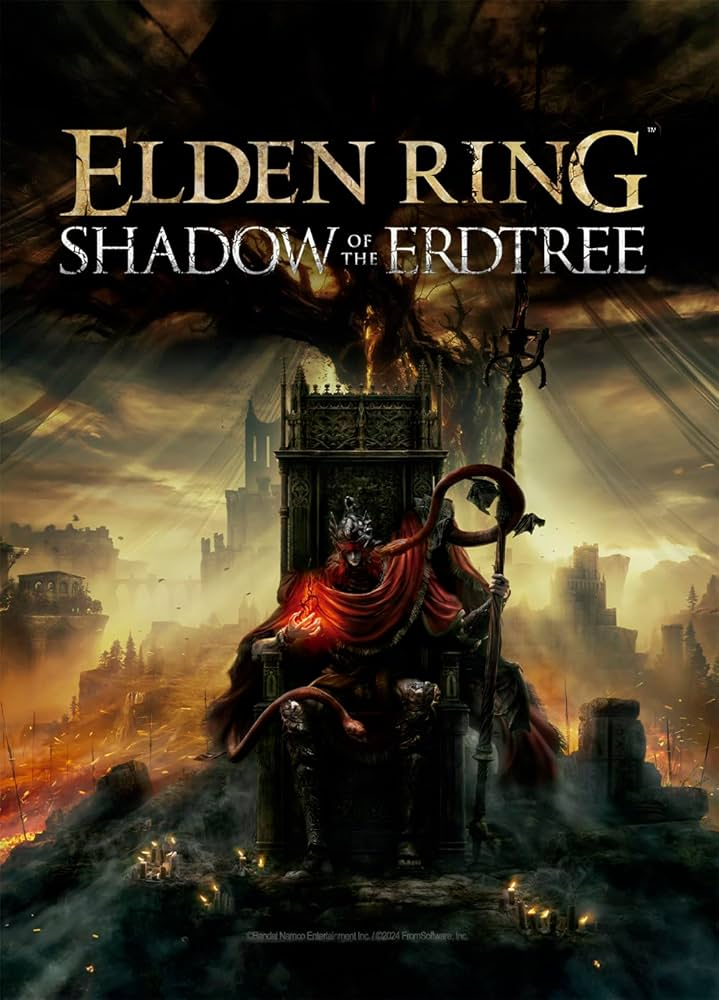

Elden Ring
Lançado em: 25 de Fevereiro, 2022
Plataformas: PC, Xbox One, PlayStation 4, Xbox Series X, PlayStation 5
Sobre: Elden Ring é um jogo de RPG de ação em terceira pessoa, desenvolvido pela FromSoftware e publicado pela Bandai Namco Entertainment. O jogo ganhou o Golden Joystick Award como melhor jogo do ano em 2022 e o The Game Awards na mesma categoria também em 2022 (incluindo outros três prêmios).
Elden Ring inovou ao ser o primeiro jogo do estilo "Souls Like" de mundo aberto e seu combate depende muito de elementos de construção de personagens encontrados em títulos anteriores da série Souls e propriedades intelectuais relacionadas, como combate corpo a corpo calculado e de curto alcance com o uso de habilidades e magias, bem como mecânicas de bloqueio e esquiva.
Seu enredo ocorre no reino das Terras Intermédias, algum tempo após a destruição do Anel Prístino e a dispersão de seus fragmentos, as Grandes Runas. Uma vez agraciado pelo anel e o Erdtree que simboliza sua presença, o reino agora é governado pela descendência semideusa da Rainha Marika, a Eterna, cada um possuindo um fragmento do anel que os corrompe e os mancha com poder. Como um "Maculado" — um exilado das Terras Intermédias e que perdeu a graça do anel e convocado de volta após a Fragmentação — o jogador deve atravessar o reino para encontrar todas as Grandes Runas, restaurar o Anel Prístino e se tornar o Lorde Prístino.